import torch
import torchvision
import torchvision.transforms as transforms
import matplotlib.pyplot as plt
import matplotlib.gridspec as gridspec
import torch.optim as optim
from sklearn.kernel_approximation import RBFSampler
import warnings
warnings.filterwarnings('ignore')
import numpy as np
import pandas as pd
import torch.nn as nn
import torch.nn.functional as F
import os
from einops import rearrange
from sklearn import preprocessing
os.environ['CUDA_LAUNCH_BLOCKING'] = '1'
device = torch.device("cuda" if torch.cuda.is_available() else "cpu")
%config InlineBackend.figure_format = 'retina'Image Reconstruction using Matrix Factorization and Linear Regression with RFF
Importing Libraries
Processing Functions
def mask_image_patch(img,x,y,z,patch_size):
img_copy = img.clone()
for i in range(patch_size):
for j in range(patch_size):
for k in range(z):
img_copy[x+i][y+j][k] = torch.nan
return img_copy
def mask_image_random(img,patch_size):
img_copy = img.clone()
n = len(img)
m = len(img[0])
random_i = np.random.choice(n*m,patch_size*patch_size,replace=False)
for i in random_i:
for j in range(3):
img_copy[i//n][i%m] = torch.nan
return img_copy
def create_mask(t,x,y,patch_size):
mask = torch.full(t.shape,True)
z = t.shape[2]
for i in range(patch_size):
for j in range(patch_size):
for k in range(z):
mask[x+i][y+j][k] = False
return mask
def create_coordinate_map(img):
height, width, num_channels = img.shape
X = torch.empty((img.shape[0],img.shape[1],2))
for i in range(height):
for j in range(width):
X[i][j][0] = i
X[i][j][1] = j
return X.reshape(-1,2)
def stack_itself(t, n):
stacked_t = t.unsqueeze(1).expand(-1, n, -1)
return stacked_t.squeeze()
def scale(img):
img_flatted = img.reshape(-1,1)
scaler_X = preprocessing.MinMaxScaler().fit(img_flatted)
img_scaled = scaler_X.transform(img_flatted).reshape(img.shape)
img_scaled = torch.tensor(img_scaled)
img_scaled = img_scaled.float()
return img_scaled
def fill_patch(original_img,reconstructed_img_patch,x,y,patch_size):
reconstructed_img = original_img.clone()
for i in range(patch_size):
for j in range(patch_size):
for k in range(3):
reconstructed_img[x+i][y+j][k] = reconstructed_img_patch[i][j][k]
return reconstructed_imgCreating Dataset
img = torchvision.io.read_image('Datasets/dog.jpg')
img_scaled = scale(img)
cropped_img = torchvision.transforms.functional.crop(img_scaled,600,800,300,300)
cropped_img = rearrange(cropped_img,'c h w -> h w c')
cropped_img = torch.tensor(cropped_img,dtype = torch.float32)
original_img = cropped_img.clone()Matrix Factorization
def factorize_matrix(A, r):
mask = ~torch.isnan(A)
m,n = A.shape
W = torch.rand(m,r,requires_grad=True)
H = torch.rand(r,n,requires_grad=True)
optimizer = optim.Adam([W,H],lr = 0.01)
prev_loss = float('inf')
epsilon = 1e-6
max_epochs = 1000
for i in range(max_epochs):
loss = torch.norm((A - torch.mm(W, H))[mask])
optimizer.zero_grad()
loss.backward()
optimizer.step()
if abs(prev_loss - loss.item()) < epsilon:
break
prev_loss = loss.item()
return W, H, loss
def image_reconstrunction_matrix_factorization(masked_img,r):
W,H,loss = factorize_matrix(rearrange(masked_img, 'h w c -> h (w c)'), r)
reconstructed_img = torch.mm(W,H).detach()
reconstructed_img = reconstructed_img.reshape(masked_img.shape[0],masked_img.shape[1],masked_img.shape[2])
# reconstructed_img = scale(reconstructed_img)
return reconstructed_imgLinear Regression + RFF
# LR + RFF
def plot_reconstructed_and_original_image(original_img, masked_img, reconstructed_img, title=""):
"""
net: torch.nn.Module
masked_img: torch.Tensor of shape (num_samples, 2)
Y: torch.Tensor of shape (num_samples, 3)
"""
fig = plt.figure(figsize=(6, 4))
gs = gridspec.GridSpec(1, 3, width_ratios=[1, 1, 1])
amasked_img0 = plt.subplot(gs[0])
amasked_img1 = plt.subplot(gs[1])
amasked_img2 = plt.subplot(gs[2])
amasked_img0.imshow(reconstructed_img)
amasked_img0.set_title("Reconstructed Image")
amasked_img1.imshow(original_img.cpu())
amasked_img1.set_title("Original Image")
amasked_img2.imshow(masked_img.cpu())
amasked_img2.set_title("Masked Image")
# for a in [amasked_img0, amasked_img1, amasked_img2]:
# a.amasked_imgis("off")
plt.show()
# def create_rff_features(masked_img, num_features, sigma):
# from sklearn.kernel_appromasked_imgimation import RBFSampler
# rff = RBFSampler(n_components=num_features, gamma=1/(2 * sigma**2))
# masked_img = masked_img.cpu().numpy()
# masked_img = rff.fit_transform(masked_img)
# return torch.tensor(masked_img, dtype=torch.float32)
def train(net, lr, masked_img, Y, mamasked_img_epochs=2000):
"""
net: torch.nn.Module
lr: float
masked_img: torch.Tensor of shape (known_pimasked_imgels, 2) // (masked_img,y)
Y: torch.Tensor of shape (known_pimasked_imgels, 3) // (r,g,b)
"""
criterion = nn.MSELoss()
optimizer = torch.optim.Adam(net.parameters(), lr=lr)
outputs = net(masked_img)
loss = criterion(outputs, Y)
prev_loss = float('inf')
epsilon = 1e-5
prev_loss = float('inf')
mamasked_img_epochs = 10000
for i in range(mamasked_img_epochs):
optimizer.zero_grad()
outputs = net(masked_img)
loss = criterion(outputs, Y)
loss.backward()
optimizer.step()
if abs(prev_loss - loss.item()) < epsilon:
break
prev_loss = loss.item()
class LinearModel(nn.Module):
def __init__(self, in_features, out_features):
super(LinearModel, self).__init__()
self.linear = nn.Linear(in_features, out_features)
def forward(self, masked_img):
return self.linear(masked_img)
def image_reconstrunction_linear_rff(masked_img,n_components,sigma = 0.008):
# y = original_img.clone().reshape(-1,3)
# masked_img = create_coordinate_map(original_img)
# mask = ~torch.isnan(masked_img).reshape(-1,3)
# masked_img_train = masked_img[mask[:,0:2]].reshape(-1,2)
# y_train = y[mask].reshape(-1,3)
# # Without RFF
# # net = LinearModel(2,3)
# # train(net,0.01,masked_img_train,y_train,1000)
# # plot_reconstructed_and_original_image(original_img, net, masked_img, title="Reconstructed Image")
# # With RFF
# features = 15000
# masked_img_rff = create_rff_features(masked_img, features, 0.008)
# mask_rff = stack_itself(mask[:,0].unsqueeze(1),features)
# masked_img_rff_train = masked_img_rff[mask_rff].reshape(-1,features)
# y_rff_train = y[mask].reshape(-1,3)
# netrff = LinearModel(masked_img_rff_train.shape[1], 3)
# train(netrff, 0.005, masked_img_rff_train, y_rff_train, 1000)
# height, width, num_channels = original_img.shape
# netrff.eval()
# with torch.no_grad():
# reconstructed_img = netrff(masked_img_rff).reshape(height,width,num_channels)
# return reconstructed_img
masked_img_flat = rearrange(original_img, 'h w c -> (h w) c').cpu().numpy()
RFF = RBFSampler(n_components=n_components, gamma=1/(2 * sigma**2))
masked_img_transformed = RFF.fit_transform(masked_img_flat)
from sklearn.linear_model import LinearRegression
linear_regressor = LinearRegression()
linear_regressor.fit(masked_img_transformed, masked_img_flat)
masked_img_reconstructed = linear_regressor.predict(masked_img_transformed)
masked_img_reconstructed = masked_img_reconstructed.reshape(masked_img.shape[0], masked_img.shape[1], 3)
return torch.tensor(masked_img_reconstructed, dtype=torch.float32).to(device)Matrix Factorization using alternation Least Squares
Data Compression
def compress_patch(img_patch, r):
W,H,loss = factorize_matrix(rearrange(img_patch, 'h w c -> h (w c)'), r)
reconstructed_img = torch.mm(W,H).detach()
reconstructed_img = reconstructed_img.reshape(img_patch.shape[0],img_patch.shape[1],img_patch.shape[2])
# reconstructed_img = scale(reconstructed_img)
return reconstructed_imgMetrics
def mse(original_img,reconstructed_img):
sum = torch.tensor(0)
for i in range(3):
sum = sum + (nn.functional.mse_loss(original_img[:,:,i],reconstructed_img[:,:,i]))
return sum/3def psnr(original_img,reconstructed_img):
psnr = torch.tensor(0)
for i in range(3):
maxi = torch.max(original_img[:,:,i])
mse = nn.functional.mse_loss(original_img[:,:,i],reconstructed_img[:,:,i])
psnr = psnr + (20*torch.log10(maxi/mse))
return psnr/3Reconstructions
# 1a MF
patch_size = 30
# x_y_s = [[10,10,3],[90,150,3],[140,60,3]]
x_y_s = [[90,150,3]]
# titles = ["A. 1 color patch", "B. 2 color patch", "C. 5 color patch"]
title = "Matrix Factorisation 30*30 rectangular patch"
reconstructed_images_1 = []
for i in range(len(x_y_s)):
print(title)
masked_img = mask_image_patch(original_img,x_y_s[i][0],x_y_s[i][1],3,patch_size)
reconstructed_img = image_reconstrunction_matrix_factorization(masked_img,100)
reconstructed_images_1.append(reconstructed_img)
mask = torch.isnan(masked_img)
original_patch = original_img[mask].reshape(patch_size,patch_size,3)
reconstructed_patch = reconstructed_img[mask].reshape(patch_size,patch_size,3)
fig,axs = plt.subplots(2,2)
axs[0][0].imshow(masked_img)
axs[0][1].imshow(reconstructed_img)
axs[1][0].imshow(original_patch)
axs[1][1].imshow(reconstructed_patch)
plt.show()
print("MSE for reconstruction : ",mse(original_patch, reconstructed_patch))
print("PSNR for reconstruction : ",psnr(original_patch, reconstructed_patch))Matrix Factorisation 30*30 rectangular patchClipping input data to the valid range for imshow with RGB data ([0..1] for floats or [0..255] for integers).
Clipping input data to the valid range for imshow with RGB data ([0..1] for floats or [0..255] for integers).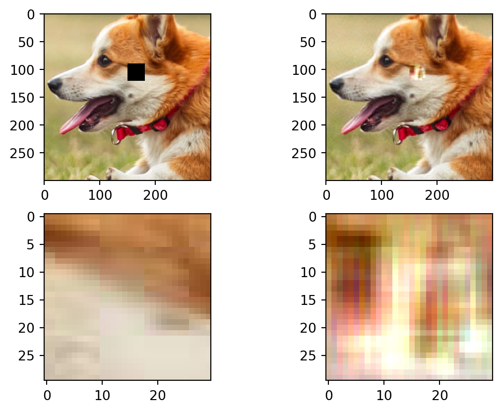
MSE for reconstruction : tensor(0.0432)
PSNR for reconstruction : tensor(26.2322)# 1a RFF
patch_size = 30
# x_y_s = [[10,10],[90,150],[140,60]]
x_y_s = [[90,150]]
reconstructed_images_2 = []
for i in range(len(x_y_s)):
print("Linear Regression + RFF for 30*30 rectangular patch")
masked_img = mask_image_patch(original_img,x_y_s[i][0],x_y_s[i][1],3,patch_size)
reconstructed_img = image_reconstrunction_linear_rff(masked_img,5000)
mask = torch.isnan(masked_img)
original_patch = original_img[mask].reshape(patch_size,patch_size,3)
reconstructed_patch = reconstructed_img[mask].reshape(patch_size,patch_size,3)
fig,axs = plt.subplots(2,2)
axs[0][0].imshow(masked_img)
axs[0][1].imshow(reconstructed_img)
axs[1][0].imshow(original_patch)
axs[1][1].imshow(reconstructed_patch)
plt.show()
print("MSE for reconstruction : ",mse(original_patch, reconstructed_patch))
print("PSNR for reconstruction : ",psnr(original_patch, reconstructed_patch))Linear Regression + RFF for 30*30 rectangular patchClipping input data to the valid range for imshow with RGB data ([0..1] for floats or [0..255] for integers).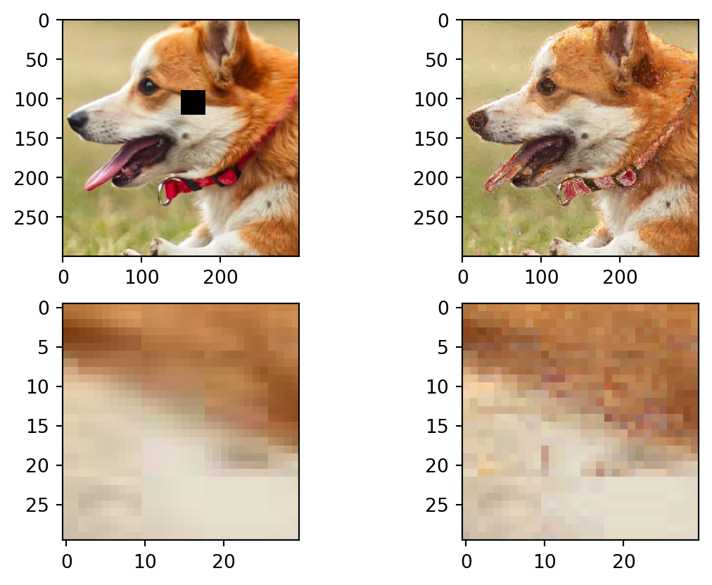
MSE for reconstruction : tensor(0.0016)
PSNR for reconstruction : tensor(55.2938)# 1b MF
patch_size = 30
titles = ["Random Missing pixels MF"]
reconstructed_images_3 = []
print(titles[0])
masked_img = mask_image_random(original_img, patch_size)
reconstructed_img = image_reconstrunction_matrix_factorization(masked_img,50)
reconstructed_images_3.append(reconstructed_img)
fig,axs = plt.subplots(1,2)
axs[0].imshow(masked_img)
axs[1].imshow(reconstructed_img)
plt.show()
print("MSE for reconstruction : ",mse(original_img, reconstructed_img))
print("PSNR for reconstruction : ",psnr(original_img, reconstructed_img))Random Missing pixels MFClipping input data to the valid range for imshow with RGB data ([0..1] for floats or [0..255] for integers).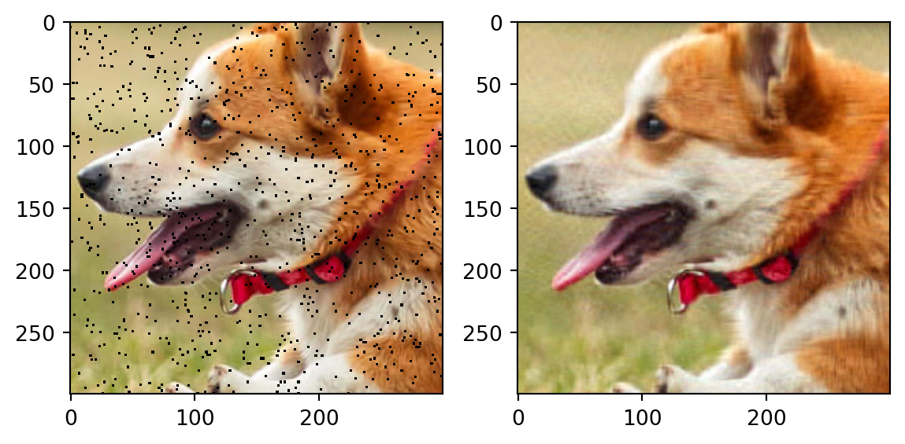
MSE for reconstruction : tensor(0.0006)
PSNR for reconstruction : tensor(64.7727)# 1b RFF
patch_size = 30
titles = ["Random Missing pixels RFF"]
reconstructed_images_4 = []
print(titles[0])
masked_img = mask_image_random(original_img, patch_size)
reconstructed_img = image_reconstrunction_linear_rff(masked_img,8000)
reconstructed_images_4.append(reconstructed_img)
fig,axs = plt.subplots(1,2)
axs[0].imshow(masked_img)
axs[1].imshow(reconstructed_img)
plt.show()
print("MSE for reconstruction : ",mse(original_img, reconstructed_img))
print("PSNR for reconstruction : ",psnr(original_img, reconstructed_img))Random Missing pixels RFFClipping input data to the valid range for imshow with RGB data ([0..1] for floats or [0..255] for integers).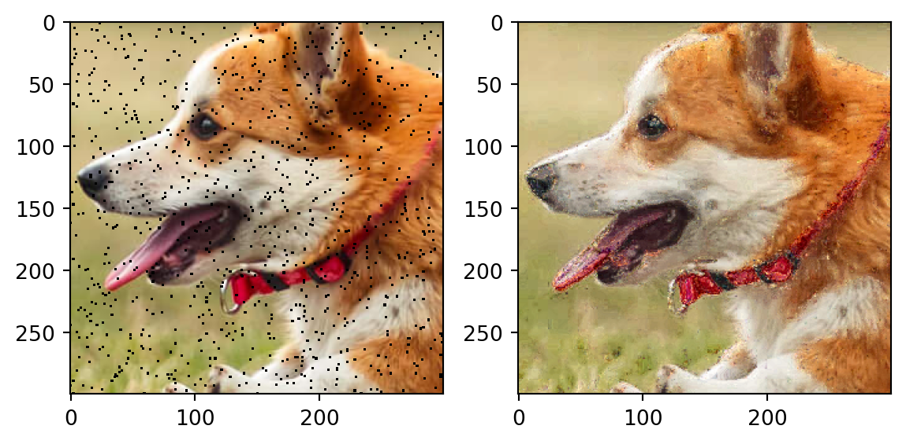
MSE for reconstruction : tensor(0.0036)
PSNR for reconstruction : tensor(48.9278)We can see, we get better reconstruction using Linear Regression than Matrix Factorization
# 2a MF
x_start = 50
y_start = 50
patch_sizes = [20,40,60,80,100]
reconstructed_images_5 = []
mses= []
psnrs = []
for i in range(len(patch_sizes)):
print("---------------------------")
print(f"Patch Size : {patch_sizes[i]}")
patch_size = patch_sizes[i]
masked_img = mask_image_patch(original_img,x_start,y_start,3,patch_sizes[i])
reconstructed_img = image_reconstrunction_matrix_factorization(masked_img,100)
reconstructed_images_5.append(reconstructed_img)
mask = torch.isnan(masked_img)
fig,axs = plt.subplots(2,2)
axs[0][0].imshow(masked_img)
axs[0][1].imshow(reconstructed_img)
axs[1][0].imshow(original_img[mask].reshape(patch_size,patch_size,3))
axs[1][1].imshow(reconstructed_img[mask].reshape(patch_size,patch_size,3))
plt.show()
ms = mse(original_img, reconstructed_img)
ps = psnr(original_img, reconstructed_img)
mses.append(ms)
psnrs.append(ps)
print("MSE for reconstruction : ",ms)
print("PSNR for reconstruction : ",ps)
print("---------------------------")
print("---------------------------")
plt.plot(patch_sizes,mses)
plt.xlabel("Patch size")
plt.ylabel("MSE for reconstruction")
print("---------------------------")---------------------------
Patch Size : 20Clipping input data to the valid range for imshow with RGB data ([0..1] for floats or [0..255] for integers).
Clipping input data to the valid range for imshow with RGB data ([0..1] for floats or [0..255] for integers).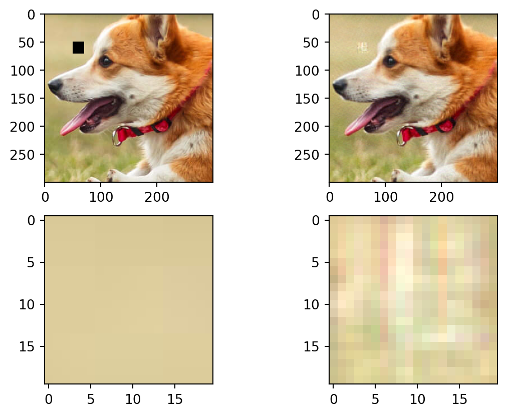
MSE for reconstruction : tensor(0.0003)
PSNR for reconstruction : tensor(70.0460)
---------------------------
---------------------------
Patch Size : 40Clipping input data to the valid range for imshow with RGB data ([0..1] for floats or [0..255] for integers).
Clipping input data to the valid range for imshow with RGB data ([0..1] for floats or [0..255] for integers).
MSE for reconstruction : tensor(0.0010)
PSNR for reconstruction : tensor(60.2608)
---------------------------
---------------------------
Patch Size : 60Clipping input data to the valid range for imshow with RGB data ([0..1] for floats or [0..255] for integers).
Clipping input data to the valid range for imshow with RGB data ([0..1] for floats or [0..255] for integers).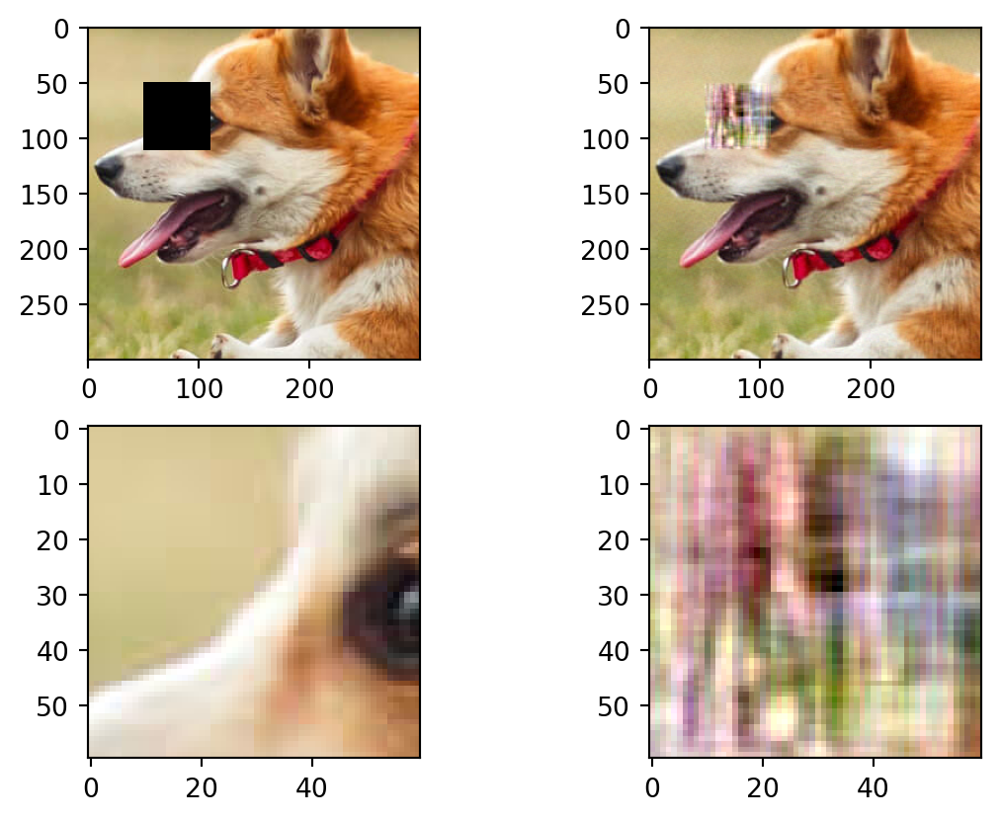
MSE for reconstruction : tensor(0.0028)
PSNR for reconstruction : tensor(51.0024)
---------------------------
---------------------------
Patch Size : 80Clipping input data to the valid range for imshow with RGB data ([0..1] for floats or [0..255] for integers).
Clipping input data to the valid range for imshow with RGB data ([0..1] for floats or [0..255] for integers).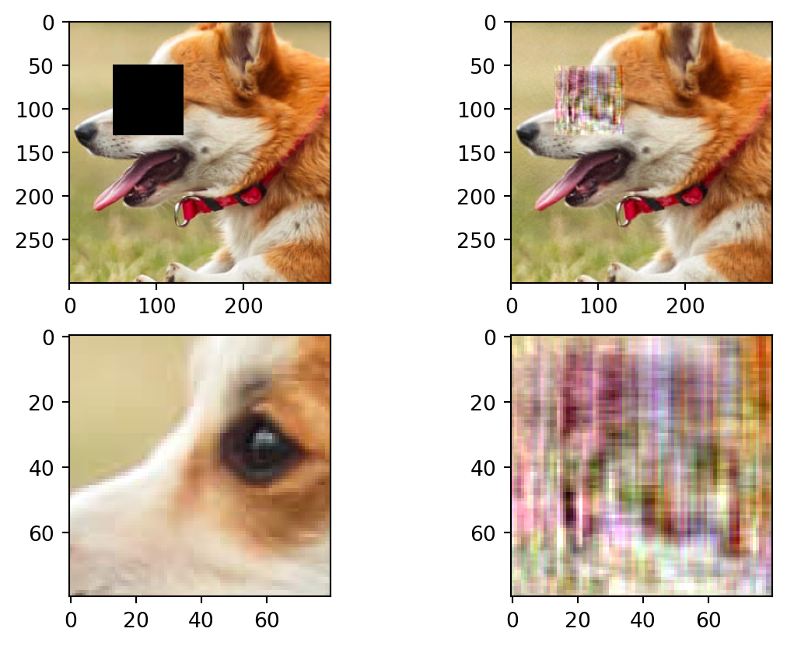
MSE for reconstruction : tensor(0.0040)
PSNR for reconstruction : tensor(48.0764)
---------------------------
---------------------------
Patch Size : 100Clipping input data to the valid range for imshow with RGB data ([0..1] for floats or [0..255] for integers).
Clipping input data to the valid range for imshow with RGB data ([0..1] for floats or [0..255] for integers).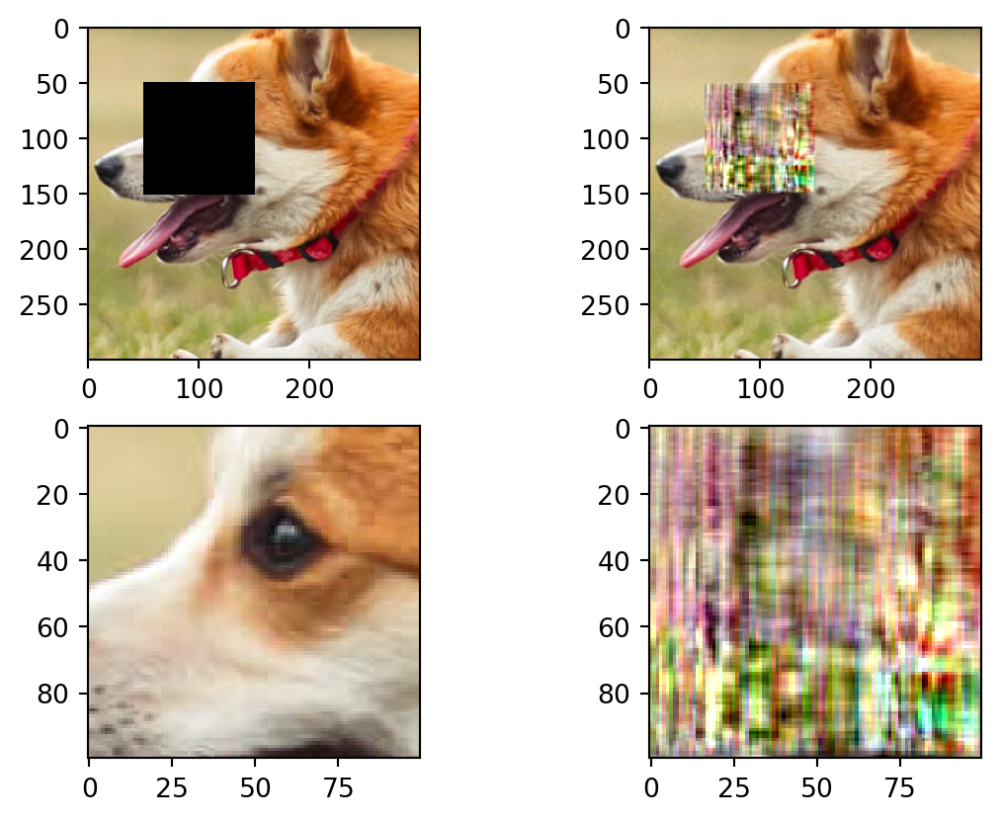
MSE for reconstruction : tensor(0.0097)
PSNR for reconstruction : tensor(40.3289)
---------------------------
---------------------------
---------------------------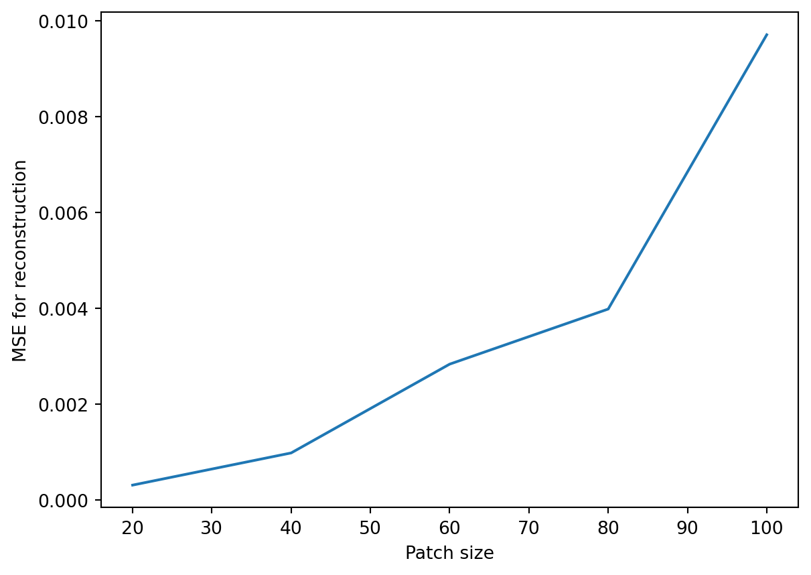
# 2b MF
x_start = 50
y_start = 50
# n1 = [30]
patch_sizes = [20,40,60,80,100]
reconstructed_images_6 = []
mses = []
psnrs = []
for i in range(len(patch_sizes)):
print("---------------------------")
print(f"Patch Size : {patch_sizes[i]}")
masked_img = mask_image_random(original_img,patch_sizes[i])
reconstructed_img = image_reconstrunction_matrix_factorization(masked_img,50)
reconstructed_images_6.append(reconstructed_img)
fig,axs = plt.subplots(1,2)
axs[0].imshow(masked_img)
axs[1].imshow(reconstructed_img)
plt.show()
ms = mse(original_img, reconstructed_img)
ps = psnr(original_img, reconstructed_img)
mses.append(ms)
psnrs.append(ps)
print("MSE for reconstruction : ",ms)
print("PSNR for reconstruction : ",ps)
print("---------------------------")
print("---------------------------")
plt.plot(patch_sizes,mses)
plt.xlabel("Patch size")
plt.ylabel("MSE for reconstruction")
plt.show()
print("---------------------------")---------------------------
Patch Size : 20Clipping input data to the valid range for imshow with RGB data ([0..1] for floats or [0..255] for integers).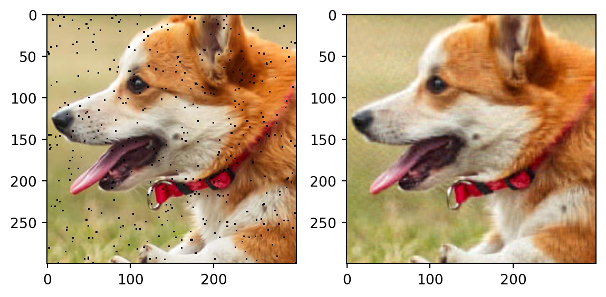
MSE for reconstruction : tensor(0.0006)
PSNR for reconstruction : tensor(64.8470)
---------------------------
---------------------------
Patch Size : 40Clipping input data to the valid range for imshow with RGB data ([0..1] for floats or [0..255] for integers).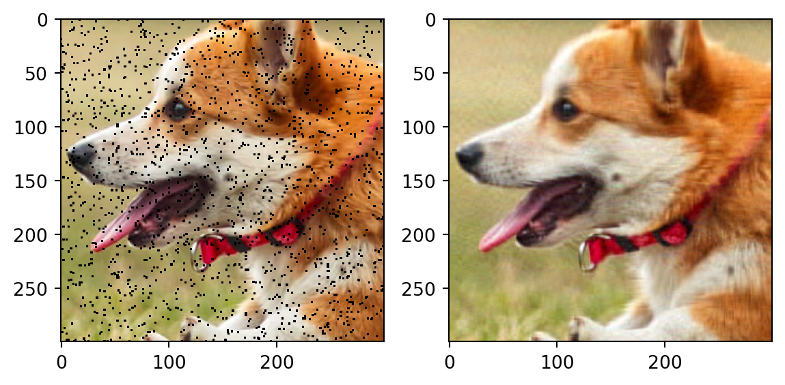
MSE for reconstruction : tensor(0.0006)
PSNR for reconstruction : tensor(64.6616)
---------------------------
---------------------------
Patch Size : 60Clipping input data to the valid range for imshow with RGB data ([0..1] for floats or [0..255] for integers).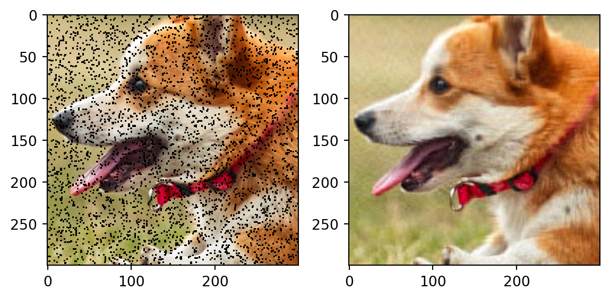
MSE for reconstruction : tensor(0.0006)
PSNR for reconstruction : tensor(64.2025)
---------------------------
---------------------------
Patch Size : 80Clipping input data to the valid range for imshow with RGB data ([0..1] for floats or [0..255] for integers).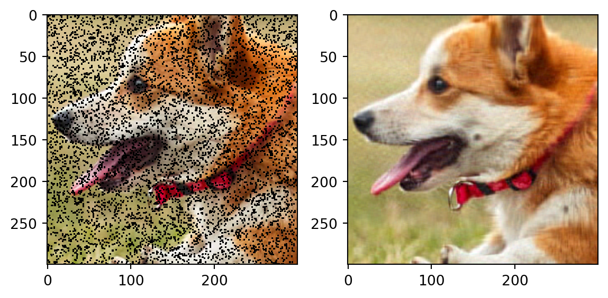
MSE for reconstruction : tensor(0.0006)
PSNR for reconstruction : tensor(64.3217)
---------------------------
---------------------------
Patch Size : 100Clipping input data to the valid range for imshow with RGB data ([0..1] for floats or [0..255] for integers).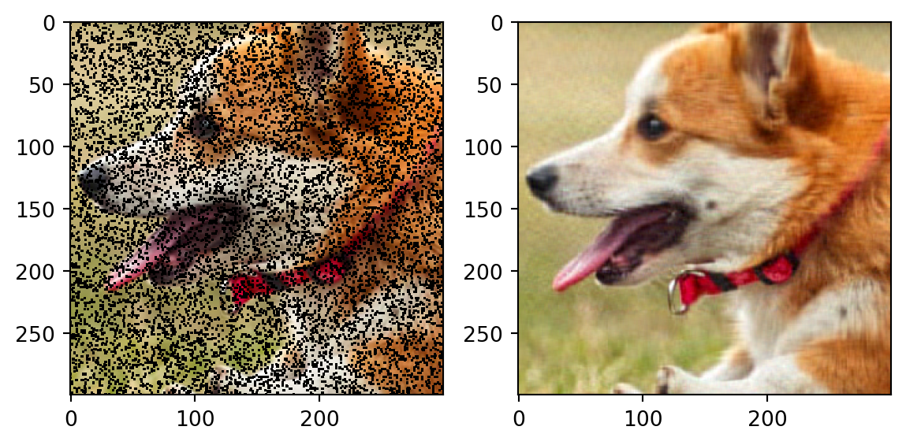
MSE for reconstruction : tensor(0.0006)
PSNR for reconstruction : tensor(64.0207)
---------------------------
---------------------------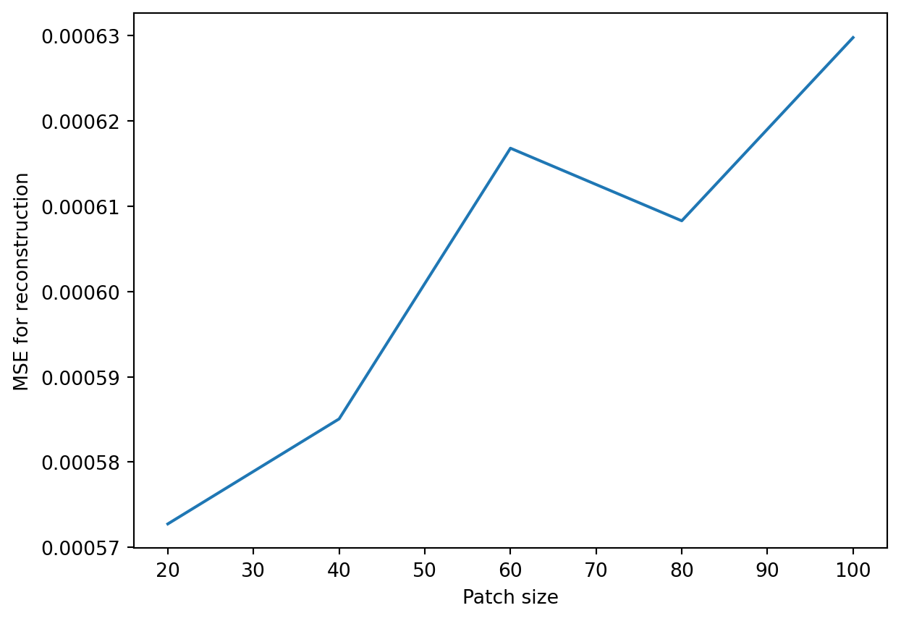
---------------------------Data Compression Reconstructions
patch_size = 50
x_y_s = [[10,10],[90,150],[140,60]]
rs = [5, 10, 25, 50]
titles = ["A. 1 color patch", "B. 2 color patch", "C. 5 color patch"]
def border_patch(original_img,x,y,patch_size):
bordered_img = original_img.clone()
for i in range(patch_size):
for k in range(3):
bordered_img[x+i][y][k] = torch.nan
bordered_img[x+i][y+patch_size][k] = torch.nan
for j in range(patch_size):
for k in range(3):
bordered_img[x][y+j][k] = torch.nan
bordered_img[x+patch_size][y+j][k] = torch.nan
return bordered_img
mses = np.empty((len(x_y_s),len(rs)))
pses = np.empty((len(x_y_s),len(rs)))
for i in range(len(x_y_s)):
print("---------------------------")
print(titles[i])
for j in range(len(rs)):
print("r : ",rs[j])
mask = create_mask(original_img, x_y_s[i][0], x_y_s[i][1],patch_size)
img_patch = original_img[~mask].reshape(patch_size,patch_size,3)
reconstructed_img_patch = image_reconstrunction_matrix_factorization(img_patch,rs[j])
reconstructed_img = fill_patch(original_img,reconstructed_img_patch,x_y_s[i][0],x_y_s[i][1],patch_size)
fig,axs = plt.subplots(1,3)
axs[0].imshow(original_img)
axs[1].imshow(border_patch(original_img,x_y_s[i][0],x_y_s[i][1],patch_size))
axs[2].imshow(reconstructed_img)
plt.show()
ms = mse(img_patch, reconstructed_img_patch)
ps = psnr(img_patch, reconstructed_img_patch)
print("MSE for reconstruction : ",ms)
print("PSNR for reconstruction : ",ps)
mses[i][j] = ms
pses[i][j] = ps
print("---------------------------")---------------------------
A. 1 color patch
r : 5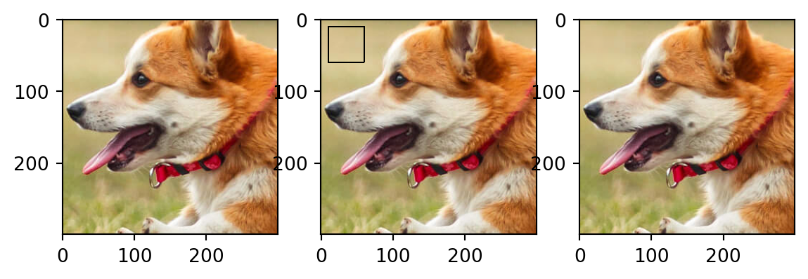
MSE for reconstruction : tensor(9.0553e-06)
PSNR for reconstruction : tensor(98.6452)
r : 10MSE for reconstruction : tensor(5.9841e-06)
PSNR for reconstruction : tensor(102.1143)
r : 25MSE for reconstruction : tensor(8.2938e-06)
PSNR for reconstruction : tensor(99.2837)
r : 50MSE for reconstruction : tensor(1.0909e-05)
PSNR for reconstruction : tensor(96.9057)
---------------------------
---------------------------
B. 2 color patch
r : 5Clipping input data to the valid range for imshow with RGB data ([0..1] for floats or [0..255] for integers).MSE for reconstruction : tensor(0.0005)
PSNR for reconstruction : tensor(65.8513)
r : 10Clipping input data to the valid range for imshow with RGB data ([0..1] for floats or [0..255] for integers).MSE for reconstruction : tensor(0.0001)
PSNR for reconstruction : tensor(77.2119)
r : 25MSE for reconstruction : tensor(2.6907e-05)
PSNR for reconstruction : tensor(90.3394)
r : 50MSE for reconstruction : tensor(1.7875e-05)
PSNR for reconstruction : tensor(93.9191)
---------------------------
---------------------------
C. 5 color patch
r : 5MSE for reconstruction : tensor(0.0026)
PSNR for reconstruction : tensor(50.8034)
r : 10Clipping input data to the valid range for imshow with RGB data ([0..1] for floats or [0..255] for integers).MSE for reconstruction : tensor(0.0008)
PSNR for reconstruction : tensor(60.5929)
r : 25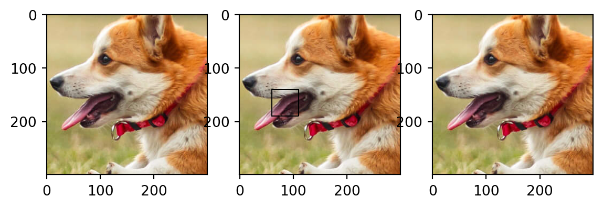
MSE for reconstruction : tensor(3.3340e-05)
PSNR for reconstruction : tensor(88.6006)
r : 50MSE for reconstruction : tensor(1.1926e-05)
PSNR for reconstruction : tensor(97.5402)
---------------------------print("MSE for Different Cases")
mse_dataframe = pd.DataFrame(mses,index = ['1 color','2 colors','5 colors'],columns = rs)
mse_dataframeMSE for Different Cases| 5 | 10 | 25 | 50 | |
|---|---|---|---|---|
| 1 color | 0.000009 | 0.000006 | 0.000008 | 0.000011 |
| 2 colors | 0.000451 | 0.000122 | 0.000027 | 0.000018 |
| 5 colors | 0.002596 | 0.000838 | 0.000033 | 0.000012 |
print("PSNR for Different Cases")
mse_dataframe = pd.DataFrame(pses,index = ['1 color','2 colors','5 colors'],columns = rs)
mse_dataframePSNR for Different Cases| 5 | 10 | 25 | 50 | |
|---|---|---|---|---|
| 1 color | 98.645203 | 102.114319 | 99.283699 | 96.905663 |
| 2 colors | 65.851326 | 77.211937 | 90.339439 | 93.919067 |
| 5 colors | 50.803440 | 60.592869 | 88.600624 | 97.540192 |